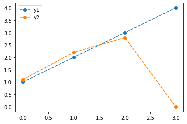
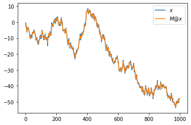
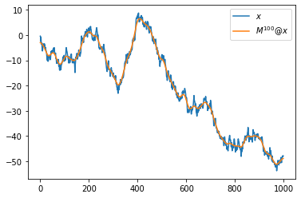

강의영상
youtube: https://youtube.com/playlist?list=PLQqh36zP38-xYcEpzHG1vC5hYDpgE5V5Z
imports
예비학습: matplotlib
범례추가
- 예시1
y1= [1.0, 2.0, 3.0, 4.0]
y2= [1.1, 2.2, 2.8, 0.0]
plt.plot(y1,'--o',label='y1')
plt.plot(y2,'--o',label='y2')
plt.legend()<matplotlib.legend.Legend at 0x7fd0c8ed6e80>
- 예시2
넘파이 활용 (2단계)
변환을 의미하는 행렬
1-3. 아래는 우산모양의 scatter plot을 그릴 수 있는 \((x_i,y_i)\) 좌표값을 불러와서 시각화하는 코드이다.
# 자료저장
data_raw = np.array(pd.read_csv('https://raw.githubusercontent.com/guebin/2021IR/master/_notebooks/round2.csv')).T
data_rawarray([[ 12, 12, 13, ..., 636, 636, 637],
[313, 314, 279, ..., 416, 417, 409]])(array([ 12, 12, 13, ..., 636, 636, 637]),
array([313, 314, 279, ..., 416, 417, 409]))
1. x_raw와 y_raw를 각각 표준화하고 x, y에 저장하라. 결과를 시각화하라. 그리고 x, y를 바탕으로 data matrix를 다시 구성하라.
(풀이)
표준화
시각화

data matrix 재구성
array([[-1.79820085, -1.79820085, -1.79255336, ..., 1.72583347,
1.72583347, 1.73148096],
[-0.18390658, -0.17703046, -0.41769466, ..., 0.52433376,
0.53120988, 0.47620092]])2. 아래와 같은 규칙에 따라 \((x_i,y_i)\)를 \((\tilde{x}_i,\tilde{y}_i\))로 변환하라. 단 여기에서 \(\theta= \frac{\pi}{4}\)로 가정한다.
- \({\tt xx}_i = \tilde{x}_i = (\cos\theta) x_i - (\sin\theta) y_i\)
- \({\tt yy}_i = \tilde{y}_i = (\sin\theta) x_i + (\cos\theta) y_i\)
\((x_i,y_i)\)와 \((\tilde{x}_i, \tilde{y}_i)\)를 겹쳐서 시각화 하라. 이 변환이 의미하는 바는 무엇이라고 생각하는가?
(풀이1)
theta = np.pi/4
xx = np.cos(theta)*x - np.sin(theta)*y
yy = np.sin(theta)*x + np.cos(theta)*y
plt.figure(figsize=(6,6))
plt.plot(x,y,'o', label=r'$(x,y)$')
plt.plot(xx,yy,'o', label=r'$(xx,yy)$')
plt.legend()<matplotlib.legend.Legend at 0x7f79adb12490>
(풀이2)
아래의 규칙을 다시 고려하자.
- \({\tt xx}_i = \tilde{x}_i = (\cos\theta) x_i - (\sin\theta) y_i\)
- \({\tt yy}_i = \tilde{y}_i = (\sin\theta) x_i + (\cos\theta) y_i\)
이는 아래와 같이 재표현가능하다.
\(\begin{cases} {\tt xx}_1 = (\cos\theta)x_1 - (\sin\theta)y_1 \\ {\tt yy}_1 = (\sin\theta)x_1 + (\cos\theta)y_1 \end{cases}\)
\(\begin{cases} {\tt xx}_2 = (\cos\theta)x_2 - (\sin\theta)y_2 \\ {\tt yy}_2 = (\sin\theta)x_2 + (\cos\theta)y_2 \end{cases}\)
\(\dots\)
\(\begin{cases} {\tt xx}_n = (\cos\theta)x_n - (\sin\theta)y_1 \\ {\tt yy}_n = (\sin\theta)x_n + (\cos\theta)y_n \end{cases}\)
이는 다시 아래와 같이 재 표현가능하다.
\(\begin{bmatrix} {\tt xx}_1 \\ {\tt yy}_1 \end{bmatrix} = \begin{bmatrix} \cos\theta & - \sin\theta \\ \sin\theta & \cos\theta \end{bmatrix} \begin{bmatrix} x_1 \\ y_1 \end{bmatrix}\)
\(\begin{bmatrix} {\tt xx}_2 \\ {\tt yy}_2 \end{bmatrix} = \begin{bmatrix} \cos\theta & - \sin\theta \\ \sin\theta & \cos\theta \end{bmatrix} \begin{bmatrix} x_2 \\ y_2 \end{bmatrix}\)
\(\dots\)
\(\begin{bmatrix} {\tt xx}_n \\ {\tt yy}_n \end{bmatrix} = \begin{bmatrix} \cos\theta & - \sin\theta \\ \sin\theta & \cos\theta \end{bmatrix} \begin{bmatrix} x_n \\ y_n \end{bmatrix}\)
이는 다시 아래와 같이 재 표현가능하다. (이게 처음엔 생각하기 어려워요!! \(\star\star\star\))
- \(\begin{bmatrix} {\tt xx}_1 & {\tt xx}_2 & \dots & {\tt xx}_n \\ {\tt yy}_1 & {\tt yy}_2 & \dots & {\tt yy}_n \end{bmatrix} = \begin{bmatrix} \cos\theta & - \sin\theta \\ \sin\theta & \cos\theta \end{bmatrix} \begin{bmatrix} x_1 & x_2 & \dots & x_n \\ y_1 & y_2 & \dots & y_n \end{bmatrix}\)
위의 수식에 맞추어 변환을 진행하면
array([[ 0.70710678, -0.70710678],
[ 0.70710678, 0.70710678]])array([[-1.14147842, -1.14634057, -0.97217191, ..., 0.8495886 ,
0.84472644, 0.88761703],
[-1.40156161, -1.39669946, -1.56288136, ..., 1.59110851,
1.59597066, 1.56106683]])plt.figure(figsize=(6,6))
plt.plot(x,y,'o', label=r'$(x,y)$')
plt.plot(xx,yy,'o', label=r'$(xx,yy)$')
plt.legend()<matplotlib.legend.Legend at 0x7f79b231b940>
3. 2번과 같은 변환을 8번 연속진행한 결과를 시각화하라.
(풀이)
plt.figure(figsize=(6,6))
xx,yy=np.linalg.matrix_power(R,8) @ data
plt.plot(x,y,'o',label=r'$data=(x,y)$')
plt.plot(xx,yy,'o',label=r'$R^8@data=(xx,yy)$')
plt.legend()<matplotlib.legend.Legend at 0x7f79b2198220>
4. 2번의 변환을 역변환하는 코드를 구현하라. 원본, 변환, 역변환한 자료를 순서대로 시각화 하라. 결과를 아래와 같이 저장하라.
- 원본: \({\tt x}, {\tt y}\)
- 2번변환: \({\tt xx}, {\tt yy}\)
- 2번의역변환 \({\tt xxx}, {\tt yyy}\)
(풀이)
plt.figure(figsize=(6,6))
plt.plot(x,y,'.', label=r'$data = (x,y)$')
plt.plot(xx,yy,'.', label=r'$R@data = (xx,yy)$')
plt.plot(xxx,yyy,'.', label=r'$R^{-1}@data = (xxx,yyy)$')
plt.legend()<matplotlib.legend.Legend at 0x7f79b208d3d0>
5-8. 시계열 자료와 이동평균
5. 아래의 수식에 따르는 수열 \(x_t\)를 생성하라. 단, \(T=1000\) 으로 설정하고 랜덤시드는 np.random.seed(2)와 같이 설정한다.
- \(x_1=\epsilon_1\)
- \(x_2=\epsilon_1+\epsilon_2\)
- \(x_3=\epsilon_1+\epsilon_2+\epsilon_3\)
- \(\dots\)
- \(x_T=\sum_{t=1}^{T} \epsilon_t\)
생성결과를 시각화하라.
hint 아래의 코드를 활용하면 쉽다.
(풀이)
6. 아래와 같은 변환을 수행하고 결과를 시각화 하라.
- \({\tt xx}_1= \frac{1}{3}(x_1+x_2)\)
- \({\tt xx}_2= \frac{1}{3}(x_1+x_2+x_3)\)
- \({\tt xx}_3= \frac{1}{3}(x_2+x_3+x_4)\)
- \(\dots\)
- \({\tt xx}_{T-1}= \frac{1}{3}(x_{T-1}+x_{T-1}+x_T)\)
- \({\tt xx}_{T}= \frac{1}{3}(x_{T-1}+x_T)\)
hint 아래의 수식을 이용하라.
- \(\begin{bmatrix} {\tt xx}_1 \\ {\tt xx}_2 \\ {\tt xx}_3 \\ \dots \\ {\tt xx}_{T-1} \\ {\tt xx}_T \end{bmatrix}= \begin{bmatrix} 1/3 & 1/3 & 0 & 0 & 0 & \dots & 0 & 0 & 0 & 0 \\ 1/3 & 1/3 & 1/3 & 0 & 0 & \dots & 0 & 0 & 0 & 0 \\ 0 & 1/3 & 1/3 & 1/3 & 0 & \dots & 0 & 0 & 0 & 0 \\ \dots & \dots & \dots & \dots & \dots & \dots & \dots & \dots & \dots & \dots \\ 0 & 0 & 0 & 0 & 0 & \dots & 0 & 1/3 & 1/3 & 1/3 \\ 0 & 0 & 0 & 0 & 0 & \dots & 0 & 0 & 1/3 & 1/3 \\ \end{bmatrix}\begin{bmatrix} x_1 \\ x_2 \\ x_3 \\ \dots \\ x_{T-1} \\ x_T \end{bmatrix}\)
(풀이)
array([[0.33333333, 0.33333333, 0. , ..., 0. , 0. ,
0. ],
[0.33333333, 0.33333333, 0.33333333, ..., 0. , 0. ,
0. ],
[0. , 0.33333333, 0.33333333, ..., 0. , 0. ,
0. ],
...,
[0. , 0. , 0. , ..., 0.33333333, 0.33333333,
0. ],
[0. , 0. , 0. , ..., 0.33333333, 0.33333333,
0.33333333],
[0. , 0. , 0. , ..., 0. , 0.33333333,
0.33333333]])<matplotlib.legend.Legend at 0x7fd9917e2670>
- 끝이 올라간 이유? 마지막에 \(\frac{1}{3}(x_{T-1}+x_T+x_{T+1})\) 대신에 \(\frac{1}{3}(x_{T-1}+x_T+0)\) 을 이용하였기 때문
7. 아래와 같은 변환을 수행하고 결과를 시각화하라.
- \({\tt xx}_1= \frac{1}{3}(x_1+x_1+x_2)\)
- \({\tt xx}_2= \frac{1}{3}(x_1+x_2+x_3)\)
- \({\tt xx}_3= \frac{1}{3}(x_2+x_3+x_4)\)
- \(\dots\)
- \({\tt xx}_{T-1}= \frac{1}{3}(x_{T-1}+x_{T-1}+x_T)\)
- \({\tt xx}_{T}= \frac{1}{3}(x_{T-1}+x_T+x_T)\)
(풀이)
<matplotlib.legend.Legend at 0x7fd96893a190>
8. 7번의 변환을 100번 반복하고 시각화하라.
(풀이)
plt.plot(x,label=r'$x$')
plt.plot(np.linalg.matrix_power(M,100)@x,label=r'$M^{100}@x$')
plt.legend()<matplotlib.legend.Legend at 0x7fd9687943d0>
9. 7번의 변환을 1000번 반복하고 시각화하라.

HW
없음